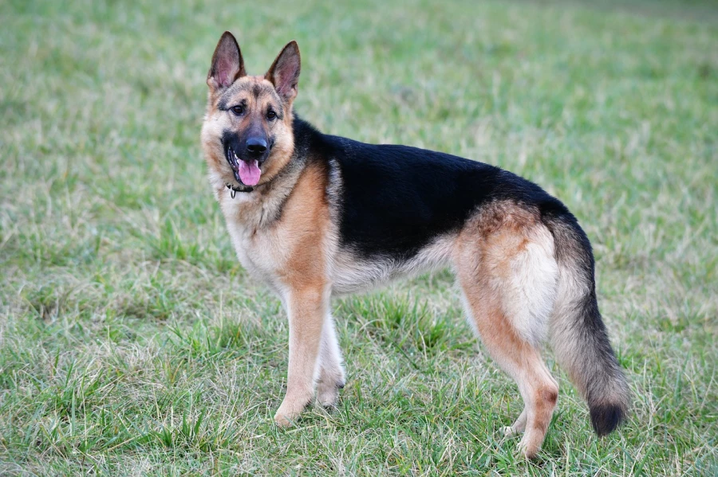
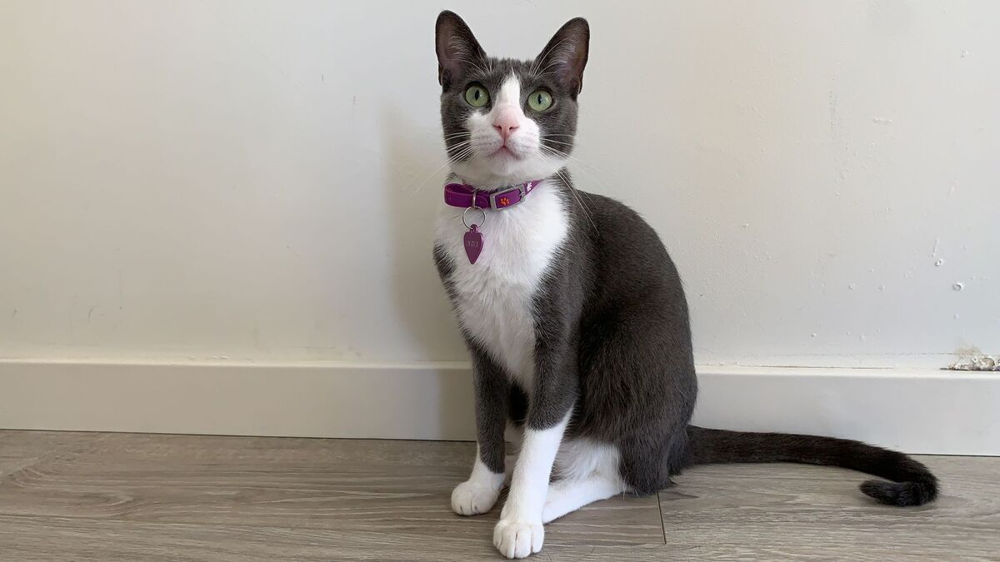

Mascotas G7
donde los cuidamos y se encuentran con sus nuevos hogares
Inicio
Perdidos
Encontrados
En Adopción
Sobre Nosotros
Contacto
Si me encontraste, ponéte en contacto con nosotros mediante el formulario al final de la página
Me llamo Chicha, me perdí en Parque Leloir en agosto de 2022. Mi familia ofrece recompensa para que nos reencontremos. REF01
Soy Coqui, tengo 4 años y me perdí en el centro de Moreno en septiembre. Quiero volver a casa...REF02
Soy Toqui! Me fui de mi casa en Castelar en un descuido y no pude volver! Extraño mucho!REF03

Soy Lala, estoy perdida desde el 14 de septiembre de 2022, me fui a pasear con unos amigos en la zona del corredor aeróbico de Hurlingham...REF04

Soy Pulguis, tengo 8 años y me fui a pasear por los techos y no volví, zona Ituzaingó. REF05
Soy Tomy, tengo 3 años y me perdí en la zona de La Reja. REF06
Me llamo Bechi, tengo 10 años y me perdí en la zona de Moreno. Necesito volver a casa porque tomo medicación y extraño...REF07
Me llamo Boris, tengo 3 años. Me fui a dar una vuelta por Luján centro. REF08
Datos personales
Apellido:
Nombre:
e-Mail:
Teléfono de contacto:
Ingrese los detalles:
Seleccionar mascota:
Perro
Gato
Otro
Nombre:
Perdido en:
CABA
Gran Buenos Aires
Prov. Buenos Aires
Adjuntar foto:
Acepto los términos y condiciones